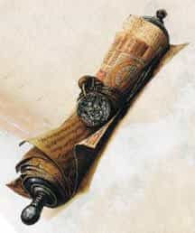
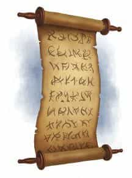
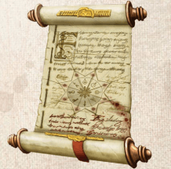

- Свиток, редкость варьируется (обычный, необычный, редкий, очень редкий, легендарный)
Свиток заклинания несёт на себе слова одного заклинания, написанные таинственным шифром. Если это заклинание есть в списке заклинаний вашего класса, вы можете прочитать свиток и наложить его заклинание, не предоставляя материальные компоненты. В противном случае свиток непонятен для вас. Накладывание заклинания свитком занимает столько же времени, сколько обычное накладывание заклинания. После того, как заклинание наложено, слова на свитке исчезают, а сам свиток рассыпается в прах. Если накладывание прервано, свиток остаётся целым.
Если заклинание есть в списке заклинаний вашего класса, но имеет более высокий уровень, чем те, что вы способны накладывать, вы должны совершить проверку базовой характеристики заклинаний, чтобы определить, удалось ли вам справиться с задачей. Сл такой проверки равна 10 + уровень заклинания. При провале заклинание просто исчезает со свитка, не произведя никаких эффектов.
Вариант: Неудачи при прочтении свитков
Существо, которое пытается, но не может наложить заклинание со свитка, провалив проверку базовой характеристики заклинаний, должно совершить спасбросок Интеллекта Сл 10. При провале бросьте к6 для определения последствий в соответствии с приведённой ниже таблицей.
к6 Результат 1 Волна магической энергии причиняет заклинателю урон силовым полем 1к6 за каждый уровень заклинания. 2 Вместо намеченной цели заклинание перенаправляется на заклинателя или на его союзника (определяется случайным образом). Если изначальной целью заклинания был сам заклинатель, то оно перенаправляется на случайное существо, находящееся поблизости. 3 Заклинание воздействует на случайную область в пределах действия заклинания. 4 Эффект заклинания оказывается прямо противоположен тому, каким он должен был быть. При этом заклинание не приносит ни вреда, ни пользы. Например, огненный шар [fireball] оборачивается безобидной волной холода. 5 Заклинатель страдает от незначительного, но причудливого эффекта, связанного с природой заклинания. Продолжительность этого эффекта такая же, как и длительность неудавшегося заклинания или же 1к10 минут для заклинаний с длительностью «мгновенная». Например, огненный шар [fireball] может обернуться тем, что из ушей заклинателя в течение 1к10 минут будет идти дым. 6 Заклинание активируется через 1к12 часов. Если целью заклинания был сам заклинатель, то оно срабатывает как обычно. Если целью было другое существо, которого уже нет рядом, то эффект от заклинания распространяется в направлении этого существа, на расстояние максимальной дистанции самого заклинания. Уровень заклинания на свитке определяет Сл спасброска от него, его бонус атаки, а также редкость этого свитка, как это показано в таблице «Свитки заклинаний».
свитки заклинаний
Уровень заклинания Редкость Сл спасброска Бонус атаки Заговор Обычная 13 +5 1 Обычная 13 +5 2 Необычная 13 +5 3 Необычная 15 +7 4 Редкая 15 +7 5 Редкая 17 +9 6 Очень редкая 17 +9 7 Очень редкая 18 +10 8 Очень редкая 18 +10 9 Легендарная 19 +11
Если свиток содержит заклинание из списка заклинаний волшебника, то оно может быть скопировано в книгу заклинаний. Для этого надо преуспеть в проверке Интеллекта (Магия), Сл которой равна 10 + уровень заклинания. Если проверка успешна, заклинание удаётся скопировать. Вне зависимости от исхода проверки свиток после этого уничтожается.
Свиток заклинания — Магические предметы
Официальные материалы от Wizards of the Coast и от издательств, поддерживаемых этой компанией.
Свиток заклинания [Spell scroll]DMG14 DMG24
Галерея


Комментарии
"Some magic items allow the user to cast a spell from the item. The spell is cast at the lowest possible spell level, doesn’t expend any of the user’s spell slots, and requires no components, unless the item’s description says otherwise."
"Если это заклинание есть в списке заклинаний вашего класса, вы можете прочитать свиток и наложить его заклинание, не предоставляя материальные компоненты".
А значит свиток требует любых компонентов заклинания, кроме материального, и наложенное таким образом заклинание так же легко обнаруживается и контрспелится
Этот вординг никоим образом не означает, что свиток требует любых компонентов кроме материального. Общее правило гласит, что при использовании магических предметов соматические, вербальные и материальные компоненты не используются и это применимо к свиткам заклинаний в том числе. Прошу ознакомиться в советах мудреца с "Casting from a spell scroll: It doesn’t say it requires V/S components" - это подтвердит мои слова.
Ваша интерпретация является лишь вашей интерпретацией правил.
Каюсь, грешен.
Хотя моя интерпретация и не лишена смысла. В описании свитка сказано лишь о накладывания заклинания, и отсутствии необходимости предоставлять материальный компонент. Логично предположить, с таким то уточнением, что остальные компоненты обычно требуемые для накладывания заклинания сохраняются.
В любом случае спасибо за корректировку!
Но есть и Мистический воин, или требуется что-то иное?
Чисто формально у него нету "Списка заклинаний класса", но он знает спелл. Означает ли это что такой персонаж может создать свиток, но не может его прочитать?
Т.е. не нужны никакие компоненты.
Верно ли то, что Мистический рыцарь и Мистический ловкач не могут читать никакие свитки с заклинаниями, потому как классы Воин и Плут не имеют классовых списков заклинаний, а берут из заклинаний Волшебника? Если же они всё-таки могут, то может ли Паладин с боевым стилем "Благословенный воин" читать свитки с заклинаниями из списка жрецов? Или только с заговорами жрецов?
То есть, да, имея свиток с Контрзаклинанием, вы можете накладывать его (Заклинание "Контрзаклинание"), расходуя свиток, используя действие "Реакция", не тратя ячейки. И на такое накладывание заклинания также распространяется правило "двух заклинаний в ход" - Вы не можете наложить заклинание с уровнем в том же ходу, в котором накладывали заклинание с уровнем, бонусным ли действием или основным.
2) Мистический рыцарь и Мистический ловкач могут читать свитки с заклинаниями из списка заклинаний Волшебника, так как их известные заклинания и заговоры исходят из его списка. В том числе Мистический Рыцарь/Ловкач могут создавать свитки заклинаний Волшебника, если эти заклинания им известны, и Волшебники могут их читать.
3) Паладин с боевым стилем "Благословенный воин" узнаёт один заговор жреца, добавляя его в список заклинаний Паладина. Для него заговор становиться заклинанием его класса.
Более точным определением вашей гипотезы можно привести следующий пример. Чародей божественной души может изучать заклинания как Чародея, так и Жреца, но все известные ему и полученные им заклинания считаются заклинаниями класса Чародей. Из-за чего мы уже можем задаваться следующим вопросом - "Может ли чародей божественной души использовать свитки с заклинаниями Жреца?".
Если коротко, - да, но только тех, которые Чародей сам успел за свою жизнь усвоить.
Если долго - Всё ещё работает правило, что заклинание должно быть из списка вашего класса (а заклинания жреца, изначально, вне этого списка или редко пересекаются). Чтобы заклинания жреца перенести из одного списка в другой мы должны его изучить и присвоить списку своего класса (то есть сделать заклинание доступным для класса Чародей). После этого можно заменить заклинание, но оно всё равно останется для вас заклинанием Чародея, и, если вы в последствии найдёте свиток с заклинанием когда-то бывшим в вашем списке заклинаний Чародея, оно будет вам доступно для накладывания.
Так же работает с заклинаниями у Барда, Жреца домена Магии и у многих других классов, заимствующих заклинания у других (это не распространяется на заклинания Покровителя, Домена и Клятвы, так как они являются заклинаниями Колдуна/Жреца/Паладина постольку, поскольку вы следуете Воле Покровителя/Домена или следуете Клятве).
Надеюсь помог. Удачи
Вы привели три примера получения заклинаний из различных источников:
1. Мистический рыцарь (архетип класса, изначально не магического, предоставляющий И магические ячейки И список заклинаний)
2. Чародей божественной души (Архетип класса, предоставляющий заклинания из списка заклинаний другого класса)
3. Черта "Посвящённый в магию" (Черта, дающая магию кому угодно в пределах нескольких заговоров и/или заклинаний)
Черта может предоставлять заклинания и/или заговоры любому классу (в том числе и НЕ обладателям магии), в таких заклинаниях есть ограничение на использование и в свитки заклинаний их сохранить не получиться, как, например, не получиться Астральному эльфу сохранить "Туманный шаг" от своей расы просто потому, что эти заклинания происходят не от изучения магии (вне зависимости от того, насколько нарративно-правильно вы получили черту).
Архетип Чародея "Божественная душа" предоставляет ВЫБОР заклинаний из списка заклинаний жреца, но не делает ВЕСЬ СПИСОК автоматически заклинаниями Чародея (как и многие другие умения, дающие заклинания из других списков заклинаний делают их заклинаниями соответствующего класса, как, например, Заклинания Клятвы паладина становятся заклинаниями Паладина при получении)
Архетипы Мистического Рыцаря/Ловкача, буквально, имеют в умениях "Использование заклинаний" и прямую ссылку на список заклинаний Волшебника (с ограничением по школам, но не для всех возможных заклинаний), без уточнения того, что они становятся заклинаниями Воина или Плута (потому что это не их прямая ориентация классов - они не магические изначально).
Если мы считаем, что нужно следовать прямой букве правил, то вы правы, указав на мою несостыковку - это НЕ заклинания (Заклинания волшебника в свитке) из списка заклинаний класса (Мистический рыцарь/Ловкач), из-за чего Мистический рыцарь/Ловкач не может их прочитать.
Но, так как заклинания и умение их накладывать оба класса (Воин и Плут) получают через архетип, ссылающийся на список заклинаний Волшебника, использующий заклинательную характеристику Интеллект, но имеющий ряд ограничений, то мой вывод таков - Мистический рыцарь/ловкач МОГУТ читать свитки заклинаний волшебника, так как могут изучать эти заклинания, и что сами полученные заклинания НЕ меняются в зависимости от класса персонажа (то есть НЕ становятся заклинаниями Воина или Плута). Считаю я так потому, что тот же чародей может прочитать свиток заклинания своего класса, при этом его НЕ изучая, и, следовательно, делаю вывод, что для Мистического рыцаря/Ловкача список заклинаний волшебника является ИХ списком заклинаний.
Если вы считаете иначе - ваше право. Можете ссылаться на мой ответ под 3), и считать, что Мистический рыцарь/ловкач, при такой логике, могут прочитать только те свитки, которые успели сами изучить (что вордингом правил не уточнено).
Или не согласиться со мной и в этом, приняв позицию того, что "Если это заклинание есть в списке заклинаний вашего класса, вы можете прочитать свиток и наложить его заклинание..., но так как у Плута и Воина нет списка заклинаний, то они не могут читать свитки" (что вордингом правил не уточнено).
Если вы хотите, чтобы Чародей божественной души мог читать свитки заклинаний жреца, или мистический рыцарь мог читать свитки волшебника, или чтобы вы могли за любой класс прочитать любой свиток - то все вопросы к вашему мастеру.
Чисто по RAW - у Воина/Плута своего списка заклинаний нет (они берут его у Волшебника, но его список не заменяет список Воина/плута), а у Чародея Список заклинаний жреца автоматически не пополняет список заклинаний Чародея божественной души (а только расширяет выбор), как и черты так не работают, чтобы расширять ваши возможности накладывать заклинания из свитков других классов (Azdvaz прав, сравнивая Мистического рыцаря с чертой "Посвящённый в магию". Действительно довольно схожие в вопросе определения заклинаний класса способа получения заклинаний).
То, что описано выше (в виде первого ответа) - словесная эквилибристика между RAW (Чародей божественной души может читать заклинания жреца только предварительно перенеся заклинания в свой список) и RAI (списком заклинаний Мистического рыцаря/Ловкача является список заклинаний Волшебника, следовательно Мистический рыцарь/ловкач может читать его заклинания).
На счёт черт - черты предоставляют доступ к ограниченному кол-ву заклинаний, которое достаётся персонажу любого класса, и в нём точно говориться, какие ограничения на эти заклинания распространяются. Выбор класса из черты "Посвящённый в магию" предоставляет доступ лишь к одному заклинанию с ячейкой (и двум заговорам). Но если вы считаете, что такая черта должна тогда работать в том же смысле (в вопросах возможности прочтения свитка), что и при получении заклинаний другого класса при выборе архетипа (Мистический рыцарь/Ловкач), то рекомендую посмотреть на мой ответ под 3). Прочитать тогда возможно только полученное чертой или архетипом заклинание. Как по мне разница между архетипом и чертой более весомая и всё таки Черты работают по одному принципу, а магические архетипы Плута с Воином работают по другому и места пересечения лишь в вопросе написания, а не в вопросе действия правил или духа правил.
https://www.dndbeyond.com/forums/dungeons-dragons-discussion/rules-game-mechanics/202731-arcane-trickster-and-eldritch-knight-could-never
Там был ответ и на ваш вопрос и на то, правильно ли это.
Если коротко - Кроуфорд это уточнил в "Сборнике советов мудреца", ныне не актуальном для 2024-ого издания, и принял позицию, что Мистический рыцарь/Ловкач, получая заклинания ТОЛЬКО из списка заклинаний Волшебника, считают "списком заклинаний своего класса" список заклинаний Волшебника. На черты это не распространялось и не распространяется.
https://dnd.su/articles/mechanics/318-sage-advice-compendium/#magicheskie_predmety
Там это также подробно расписано на счёт свитков с примером Мистического рыцаря и Жреца (но не чародея божественной души). Но всё же рекомендую мой собственный подход к этому (Заклинания на свитке должны уже быть в списке заклинаний вашего класса, а не "должны быть в любом списке заклинаний, используемом вашим классом").
Если ИЗУЧИЛИ заклинание с помощью расширенного ВЫБОРА - они УЖЕ вашего класса. Если изначально изучаете заклинания класса (НЕ ЧЕРТЫ) из одного КОНКРЕТНОГО списка - это список вашего класса. Черты и расы - другое и не учитывается, так как даются не от класса персонажа.
Клятва/Домен/Покровитель - дают заклинания и они доступны вам, пока вы их не предадите/поменяете, и на определённых уровнях (не иначе).
Умение класса/архетипа - дают заклинания и они доступны вам, пока вы не поменяете класс/архетип.
Как вы думаете, может ли волшебник создавать магические свитки без знания заклинания, заложенного в них? Поясню.
Изначально ведь волшебники, когда изучали магию и придумывали заклинания, должны же были проводить опыты/исследования/эксперименты, чтобы известные нам всем огненные шары летели во врагов? Кто-то изучал врождённую магию более могущественных существ, кто-то получал знания от жрецов или богов, а кто-то создавал заклинания самостоятельно (о чём даже имеется собственный лор про могущественных волшебников древности: Мельфеора, Морденкайдена, Ашдала и т.д.). И как-то же они должны были изучать заклинания (без повышения уровня, лол)? Путём экспериментов и написания набросков на бумаге с использованием магии и материи, создавая "черновые" свитки и применяя их, проводя расчёты и оптимизируя магическую формулу, они же по сути изучали неизвестные заклинания, ведь так?
Так вот, вернёмся к волшебнику. Создание свитка заклинаний - это кропотливый и продолжительный труд, не говоря уже о стоимости данного процесса, о создании магической формулы с вложенными в неё материальными компонентами и магическими силами автора свитка, а этот самый свиток, между прочим, ещё и не является гарантией того, что ты заклинание успешно перепишешь в свою книгу.
По этому я и предлагаю - дать возможность волшебнику создавать свитки заклинаний, доступных его классу. Как считаете?
Но даже при таком раскладе, многие из магов этот путь делали годами, поэтому будучи волшебником тратить 1 год (с учётом обучения) или более на одно заклинание? Ну, если мастер совсем не хочет давать тебе заклинание, то пройдя этот путь он будет обязан его отдать. Да и даже если думать так, то ограничение на "доступные волшебнику" -- очень механически сковывает, потому что если и браться за изучение магии, то всей (хотя может отдельный заклинательный класс -- отдельное обучение? У них же разная магия).
Идея правда хорошая и, как мне кажется, делает свитки гораздо более интересным инструментом, что у игрока, что у мастера. Спасибо за идею.
, если это не "уникальный" свиток, который не копирует "настоящие" заклинания (на уме только - "Свиток призыва тараска").
https://dnd.su/items/2340-scroll-of-tarrasque-summoning/
Побольше с этим можно ознакомиться по следующим ссылкам :
• https://dnd.su/articles/mechanics/159-downtime-activities/#pokupka_magicheskih_predmetov_xge
(Вкладка "Игровые механики", статья "Деятельность во время простоя", глава "Покупка магических предметов")
• https://dnd.su/articles/mechanics/159-downtime-activities/#sozdanie_magicheskogo_predmeta_dmg
(Вкладка "Игровые механики", статья "Деятельность во время простоя", глава "Создание магического предмета")
• https://dnd.su/articles/mechanics/159-downtime-activities/#prodazha_magicheskih_predmetov_dmg
(Вкладка "Игровые механики", статья "Деятельность во время простоя", глава "Продажа магических предметов")
Надеюсь вы получили ответ на свой вопрос и вам все понятно, в любом случае, всего хорошего! :)